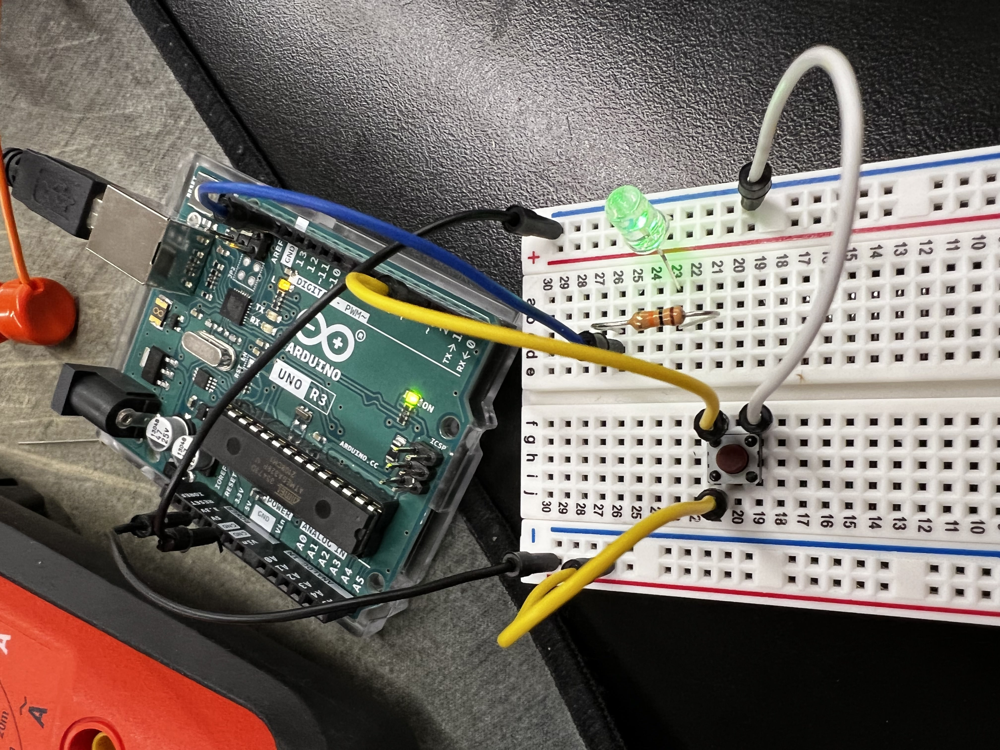
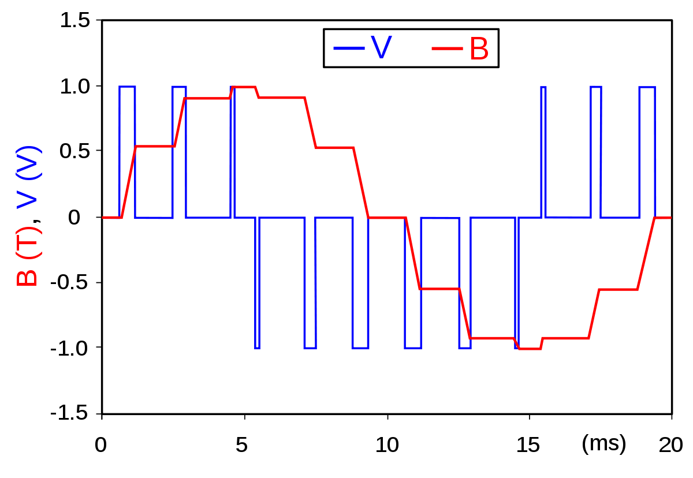
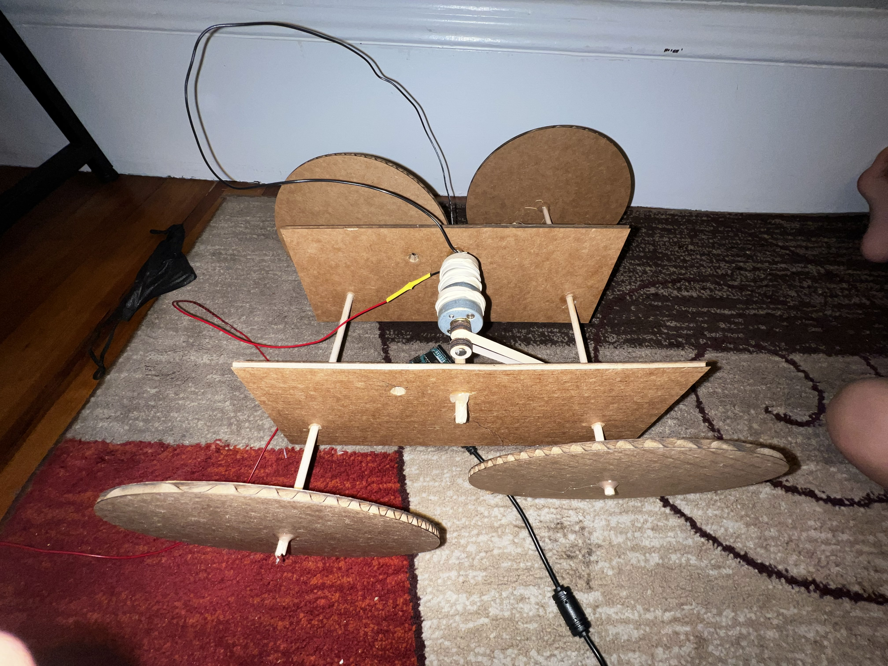
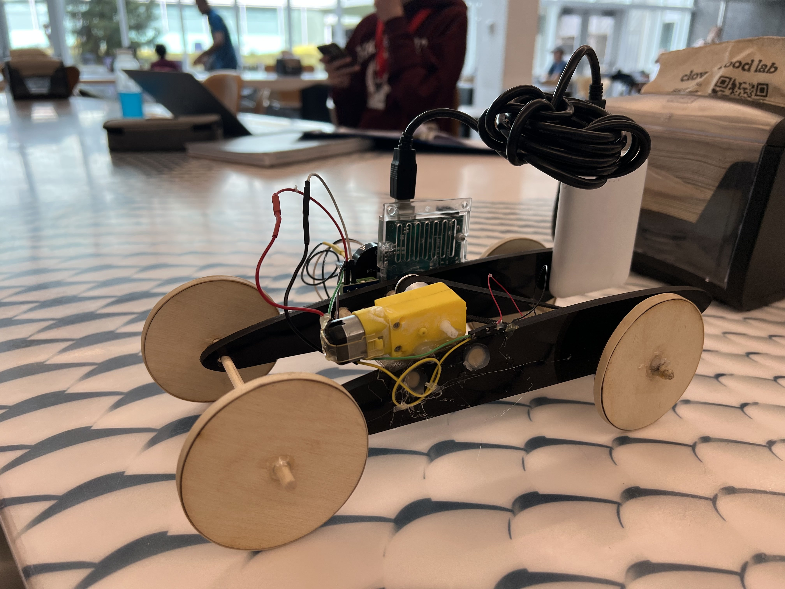
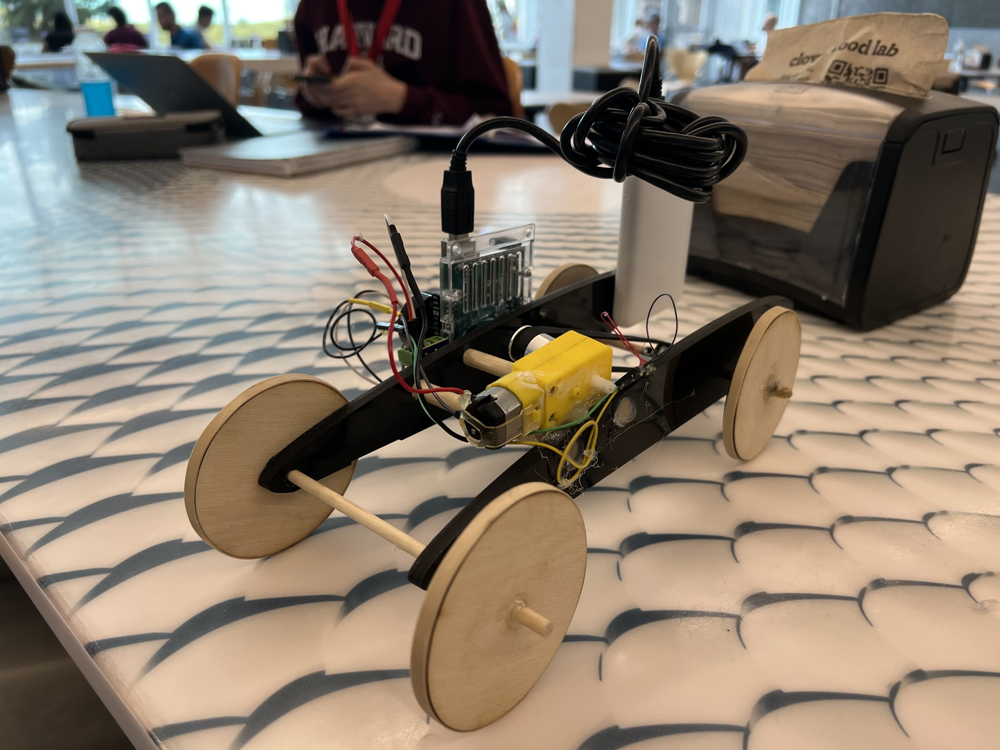

Mustafa Omran: Microcontroller Programming
<h5>This week's unit on microcontrollers was the first time I ever had an experiance with microcontrollers. I do, however, have quite a lot of experiance with C/C++. It was really fun seeing what these tiny computers could do with what was basically directing to different places at different times.</h5>
<hr><br>
<h5>My first project with prgraming microcontrollers was the class practice where a turned on light that would power off when a button was pressed. </h5>

<br><br><h5>As a class, we then moved on to programming a motor with a L9110 motor driver which had 2 pins (GND, VCC) connected the arduino board's power GND and Vin. Finally, the L9110's A1A and A1B were connected to the arduino's pin 3 and 4 as these pins could do something called Pulse Width Modulation (PWM)</h5>
<video controls muted width="400">
<source src="../images/Microcontrollers/IMG_3430.mp4" type="video/mp4">
</video> <br><br><h4>PWM</h4>
<h6>Pulse-width modulation (PWM) is a method of reducing the average power delivered by an electrical signal, by effectively chopping it up into discrete parts. The average value of voltage (and current) fed to the load is controlled by turning the switch between supply and load on and off at a fast rate. The longer the switch is on compared to the off periods, the higher the total power supplied to the load.</h6>

<br><br><hr style="border-top: dotted 3px;"><br><br>
<h5>The assignment this week was to 'program an Arduino board to do something'. I had multiple ideas in mind like ... but I one idea really shouted my name; a clap activated car.</h5><br>
<h5>After some short research, I found out that a device by the name of a piezoelectric sensor was the closest thing I could use to attempt reaching my goal. A piezoelectric sensor is a sensor that measures changes in pressure, acceleration, temperature, strain, or force by converting them to an electrical charge so while the initial clapping to activate idea was not possible, I could hit something like the table the car is rested on.</h5>
<br><h5>My first intial goal for this machine was it to be fast. To acomplish that, I looked for the biggest, fastest motor I could find. After finding the motor that suited the description and incorporating it into my machine, I was saddened that the car wouldn't move. Professor Melenbrink then explained to me that RPM does not equal power and that adding a gear box to a motor would transform a motor's RPM to torque thus making the vehicle move.</h5>
<br><br><br><h3>Video for Piezo LED Attempt</h3>
<video controls width="800" height"900">
<source src="../images/Microcontrollers/IMG_3451.mp4" type="video/mp4">
</video>
<br><br><br><h3>Circuit for Piezo LED Attempt</h3>
<img src="../images/Microcontrollers/Screenshot (76).png" alt="Circuit of First Attempt">
<br><br><br><h3>Code for Piezo LED Attempt</h3>
<pre><code class="language-aruino">
const int piezo = 0;
const int LED = 13;
void setup() {
pinMode(LED, OUTPUT);
}
void loop() {
if (analogRead(piezo) >= 5) {
digitalWrite(LED, HIGH);
delay(5000);
digitalWrite(LED, LOW);
} else {
digitalWrite(LED, LOW);
}
}
</code></pre>
<br><hr style="border-top: dotted 3px"><br>
<h4>Overall, I am pretty happy because I went from this, </h4>

<h4>To This!</h4>


<br></b><br><br><h3>Final Videos</h3>
<video controls width="800" height"900">
<source src="../images/Microcontrollers/IMG_0020.mp4" type="video/mp4">
</video>
<video controls width="800" height"900">
<source src="../images/Microcontrollers/IMG_0021.mp4" type="video/mp4">
</video>
<br><br><h3>Circuit</h3>
<img src="../images/Microcontrollers/Screenshot (77).png" alt="Circuit of Final Attempt">
<br><br><h3>After Grueling Hours of Trial-and-Error Here's my Final Code</h3>
<pre><code class="language-aruino">
// Sets Analog Pin 0 (i.e. A0) as an analog input for the piezoelectric sensor
const float piezo = A0;
// Defines pin A1A on motor control as pin digital pin 3 on the arduino
const int A1A = 3;
// Defines pin A1B on motor control as pin digital pin 4 on the arduino
const int A1B = 4;
// Variable 'times' to count how many times the piezoelectric sensor detects a value above 20
int times = 0;
void setup() {
// Defines pin 8 as an output for buzzer
pinMode(8, OUTPUT);
// Defines pin A1A (3) as output
pinMode(A1A, OUTPUT);
// Defines pin A1B (4) as output
pinMode(A1B, OUTPUT);
// Starts with the motor off
analogWrite(A1A, 0);
// Starts serial communication with a transfer rate of 115,200 bits per second
Serial.begin(115200);
}
void loop() {
while (1) {
// If the reading from the piezo sensor is greater than 20 and variable 'times'' remainder is 0 (i.e. even number), motor is signaled to run
if (analogRead(piezo) >= 20 && (times % 2) == 0) {
// Turns on motor to 'full blast' mode
analogWrite(A1A, 255);
// Turns on a buzzer to make two tones which signals to the user that the piezo has read the vibration and that the motor has been activated
int i = 0;
while (1) {
tone(8,445);
delay(200);
noTone(8);
if (i == 2) {
break;
}
i++;
}
// If reading is greater than or equal to 20 and if variable 'times' is an odd number, motor is signaled to stop
} else if (analogRead(piezo) && (times % 2) != 0) {
// Turns motor off
analogWrite(A1A, 0);
}
}
}
</code></pre>
<br><br>
<h5>After looking carefully at this, you might say, what kind of an idiot does this?</h5>
<pre><code class="language-arduino">
int i = 0;
while (1) {
tone(8,445);
delay(200);
noTone(8);
if (i == 2) {
break;
}
i++;
}
</code></pre>
<br><h5>For a thing that could be written like this!</h5>
<pre><code class="language-arduino">
for (int i = 0; i < 2; i++) {
tone(8, 445);
delay(200)
noTone(8);
}
</code></pre>
<br><br><h5>After performing 15 individual tests on almost every possible way to write a loop, I found that the run-time of the was it is written in my code was slightly lower than the other types of loops. This may be unecessary but once we get into bigger programs, run-time will matter a lot. This was just a way of practicing!</h5>
<br><br><br>
<cite><a style="color: #0645AD" href="https://en.wikipedia.org/wiki/Pulse-width_modulation" target="_blank">PWM Wikipedia</a></cite>
<p style="text-align: right;">&copy; 2022 Mustafa Omran</p>